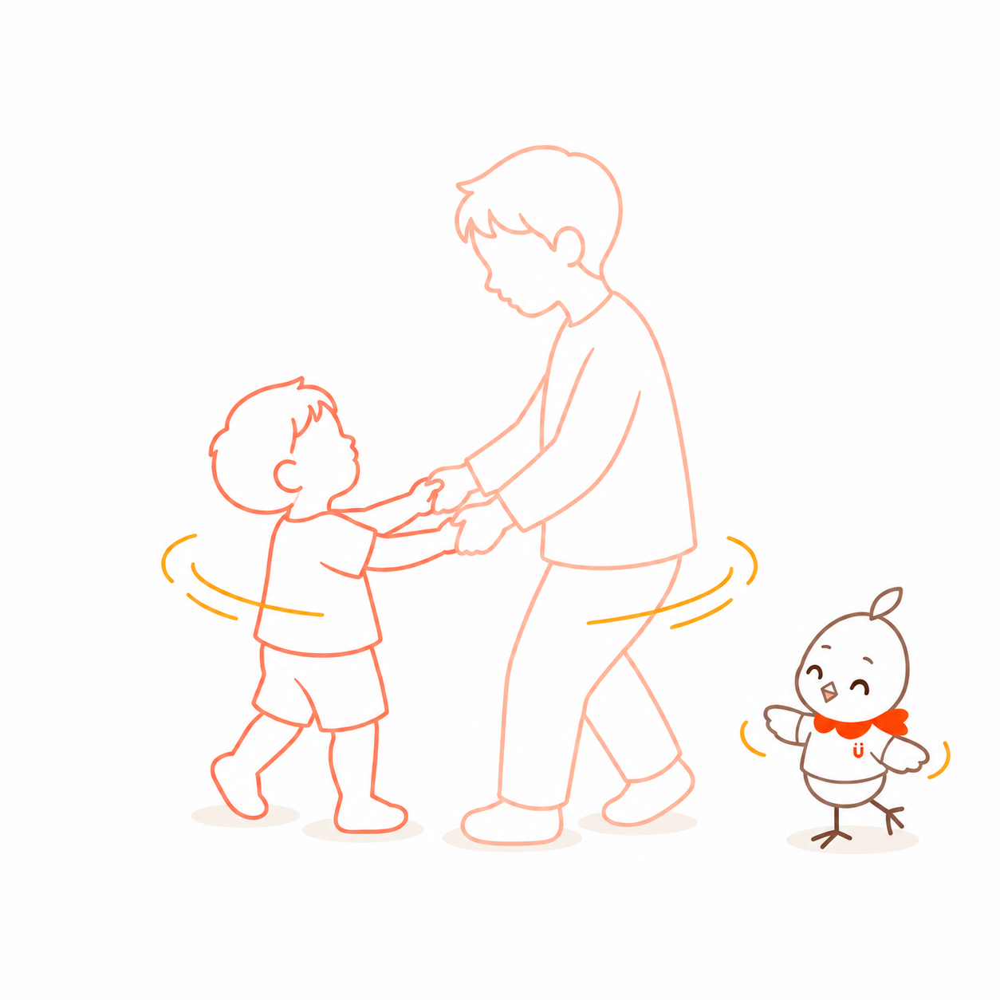
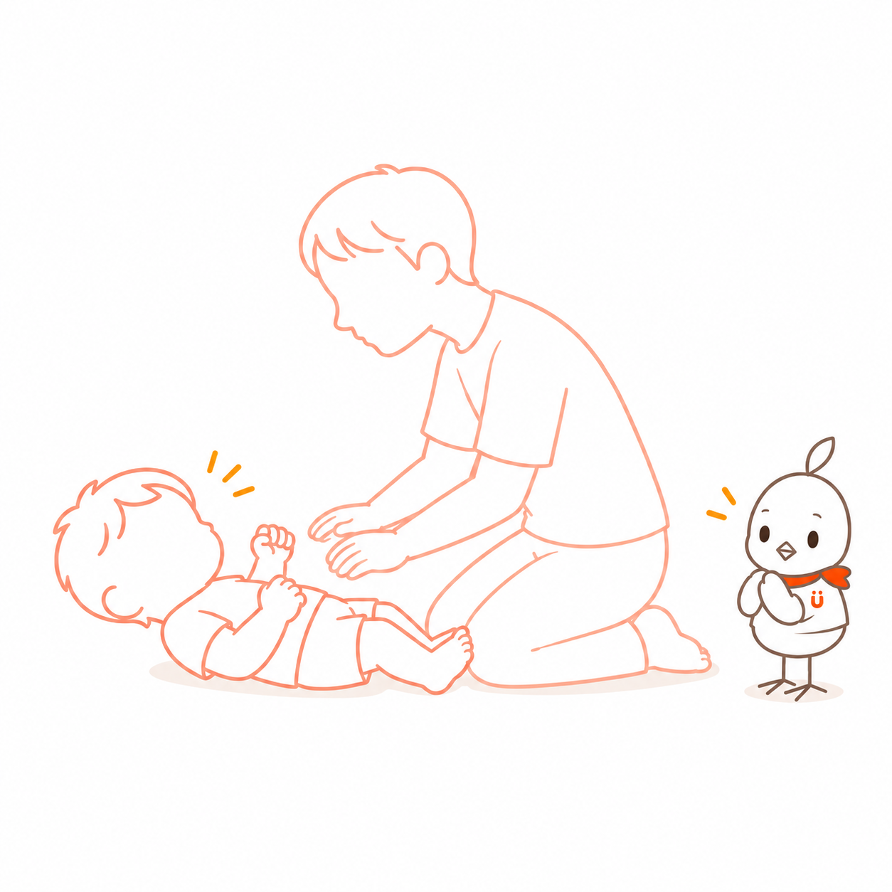
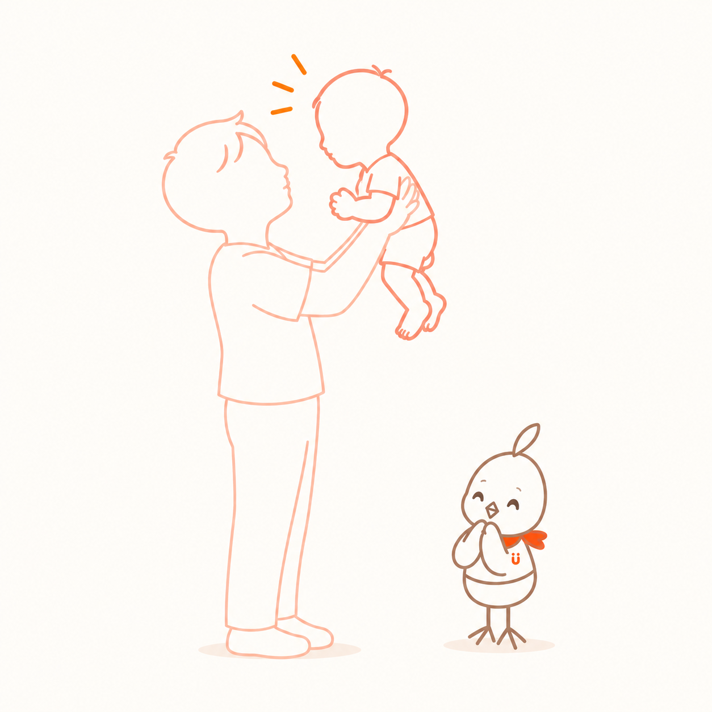

声や表情を交わす

画像ファイル未検出relationship-frame-spin-together.pngrelationship-frame-spin-together.png
画像ファイル未検出relationship-frame-tickle-pause.pngrelationship-frame-tickle-pause.png 画像ファイル未検出
画像ファイル未検出relationship-frame-parent-hand-play.pngrelationship-frame-parent-hand-play.png
画像ファイル未検出relationship-frame-lift-play.pngrelationship-frame-lift-play.png